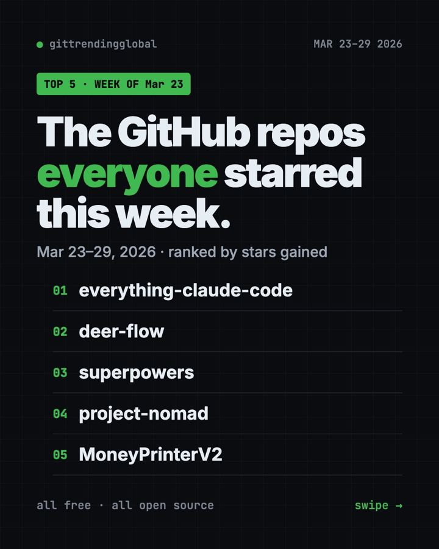
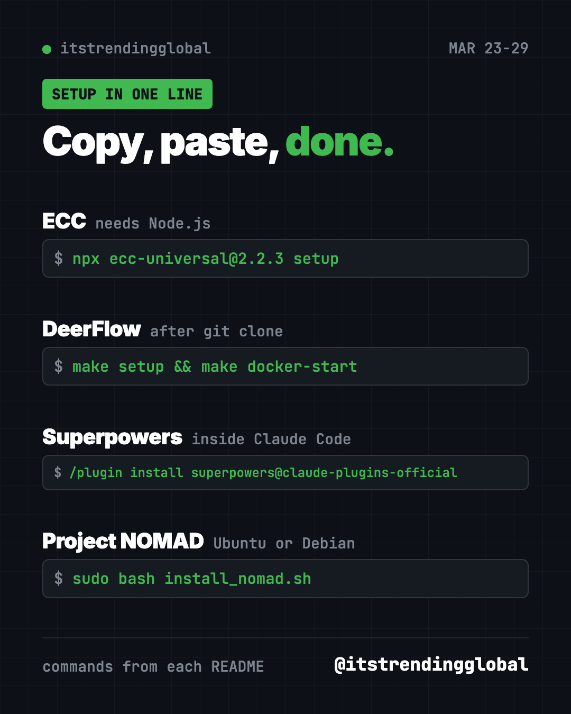

GitHub Trending March 23 2026: ECC, DeerFlow and More
GitHub trending March 23 2026: ECC, ByteDance's DeerFlow, Superpowers and Project NOMAD, an offline library. Plain-English picks with setup lines.

On GitHub trending March 23 2026, ECC took first place with about 21,600 new stars. ByteDance's DeerFlow, Superpowers and the offline library Project NOMAD followed. All four are free.
The fifth repo by stars that week was MoneyPrinterV2. We left it out on purpose, and we explain why near the end.
Key takeaways
- ECC jumped from second to first. It is a big kit of skills that makes Claude Code more careful.
- DeerFlow is ByteDance's free "super agent." It researches, writes code and makes reports, sometimes for hours.
- Superpowers stayed hot for a second week. It makes AI coders plan before they type.
- Project NOMAD is the surprise: Wikipedia, maps, books and AI on your own machine, with no internet.
The week at a glance
| Repo | What it does | Best for | Stars this week | License |
|---|---|---|---|---|
| ECC | Skills, agents and memory for AI coders | Claude Code and Codex users | +21.6K | MIT |
| DeerFlow | An AI agent that researches, codes and creates | Tinkerers and small teams | +18.9K | MIT |
| Superpowers | Plan first, code second | Anyone using Claude Code | +17.6K | MIT |
| Project NOMAD | Offline knowledge and AI server | Preppers, schools, travelers | +13.2K | Apache-2.0 |
Star gains cover March 23 to 29, 2026. Totals were checked on GitHub on October 16, 2026.
1. ECC: the add-on kit that makes Claude Code careful
Stars: +21.6K this week · about 280K total now
What it is: ECC (once called "everything-claude-code") bundles 71 agents and 311 skills, plus memory and a security scanner. You install it once. After that, your AI helper plans before building, runs tests, and reviews its own work.
Who it's for: People who use Claude Code or Codex daily and want a strong setup on day one.
Everyday use: Ask Claude Code to add a contact form to your site. With ECC, it checks the form works before calling it finished.
Install it: You need Node.js. Then paste:
npx ecc-universal@2.2.3 setup
Or ask your AI helper:
Install ECC from github.com/affaan-m/ECC using its guided setup and the small core profile.
See ECC on GitHub · Read our full guide
2. DeerFlow: ByteDance's research-and-build agent
Stars: +18.9K this week · about 84K total now
What it is: DeerFlow is a free AI agent from ByteDance, the company behind TikTok. Version 2 is a full rewrite. It splits big jobs among smaller helper agents, keeps a memory, and works inside a "sandbox," a safe walled-off space on your computer. Its README says it hit number one on GitHub Trending on February 28, 2026.
Who it's for: Tinkerers and small teams who want an agent for long tasks, like a full research report.
Everyday use: Ask it to research three budget laptops and write a comparison with sources.
Install it: The README suggests at least 8 GB of memory, plus Docker (a free app that runs software in boxes).
git clone https://github.com/bytedance/deer-flow.git
cd deer-flow
make setup
make docker-init
make docker-start
Then open http://localhost:2026.
Or ask your AI helper:
Set up DeerFlow from github.com/bytedance/deer-flow with Docker and help me connect one AI model.
3. Superpowers: still teaching AI to plan
Stars: +17.6K this week · about 300K total now
What it is: A skill pack for AI coding helpers. Before writing code, the AI asks what you want, shows a short plan in chunks you can read, and waits for your OK. We covered it last week too.
Who it's for: Anyone whose AI helper keeps building the wrong thing.
Everyday use: Ask for a simple budget tracker. Superpowers makes the AI agree on the plan with you first.
Install it: In Claude Code, type:
/plugin install superpowers@claude-plugins-official
Or ask your AI helper:
Install Superpowers from github.com/obra/superpowers and show me its basic workflow on a tiny project.
See Superpowers on GitHub · Read our full guide
4. Project NOMAD: the internet's best parts, offline
Stars: +13.2K this week · about 40K total now
What it is: Project NOMAD turns a spare computer into an offline library. It can hold Wikipedia, thousands of books, courses, maps and an optional local AI chat. Everything runs in your browser on your own hardware, with no internet needed once it is set up.
Who it's for: People who live off-grid, travel a lot, prepare for emergencies, or teach where the internet is weak.
Everyday use: Load offline Wikipedia and maps before a long cabin trip.
Install it: It runs on Ubuntu or Debian Linux. NOMAD itself needs about 5 GB of disk; the content you add needs more.
sudo apt-get update && sudo apt-get install -y curl
curl -fsSL https://raw.githubusercontent.com/Crosstalk-Solutions/project-nomad/refs/heads/main/install/install_nomad.sh -o install_nomad.sh
sudo bash install_nomad.sh
Then open http://localhost:8080.
Or ask your AI helper:
Help me install Project NOMAD on my Ubuntu machine and pick offline content that fits a 256 GB drive.
See Project NOMAD on GitHub · Read our full guide

Why we skipped number 5
MoneyPrinterV2 gained about 10,100 stars this week. It automates Twitter bots, YouTube Shorts, affiliate posts and cold outreach to local businesses. Its README also thanks gpt4free, a project that reaches AI chatbots through unofficial routes. Bulk posting bots can break platform rules and get accounts banned. That is why we do not feature it.
Which one should you try first?
- You use Claude Code: start with Superpowers, then add ECC if you want more.
- You want an agent for big jobs: try DeerFlow on a spare evening.
- You have an old laptop in a drawer: turn it into Project NOMAD.
💡 Tip: Superpowers and ECC overlap. Install one, use it for a week, then decide if you need the other.
For the full month, read the best GitHub repos of March 2026 and AI news from March 2026. Next week's list is March 30 to April 5.
FAQ
What was trending on GitHub the week of March 23, 2026?
ECC, DeerFlow, Superpowers, Project NOMAD and MoneyPrinterV2. We featured the first four.
Is DeerFlow from TikTok's company?
Yes. DeerFlow is published by ByteDance on GitHub under the MIT license, so it is free to use.
Does Project NOMAD need the internet?
Only to set it up and download content. After that, it works fully offline on your own machine.
Why didn't you feature MoneyPrinterV2?
It is built around automated posting bots and cold outreach, and it credits a tool that reaches AI chatbots through unofficial routes. We skip tools that can break platform rules.
Do I need to pay for any of these?
The tools are free. AI model keys used by DeerFlow, or by Claude Code itself, can cost money.
Want a new free tool explained every day? Follow @gittrendingglobal on Instagram.
📲 See this as a swipeable post on Instagram
Keep reading

Trending GitHub Repos October 2026: The Top 5 So Far
The trending GitHub repos of October 2026 so far: a free Photoshop-style editor, an AI art studio, a big AI model for gaming PCs and more, explained.

Trending GitHub Repos This Week, Oct 5 2026: The Top 5
Trending GitHub repos this week Oct 5 2026: Matt Pocock's skills, the openGym workout tracker, e2e testing, HyperFrames video and claude-mem memory.

GitHub Trending September 28, 2026: VoiceStudio Takes #1
GitHub trending September 28 2026: VoiceStudio, Hindsight, Paperclip, NVIDIA's OpenShell and a free 542-lesson AI course, with setup steps for each.